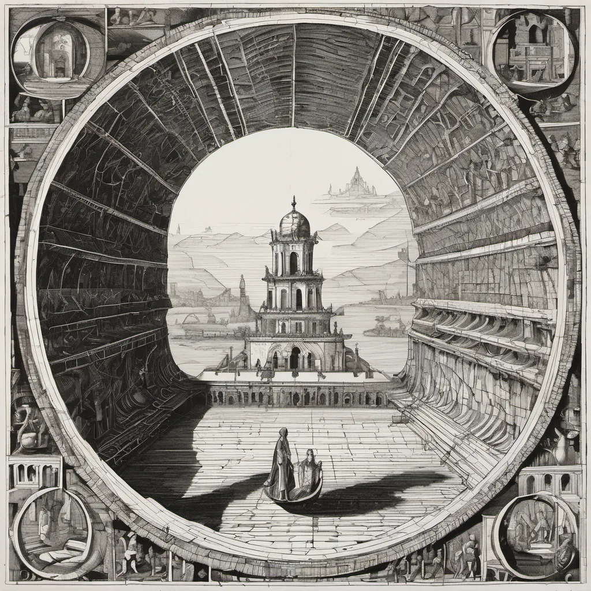

Memory Storage of a Modern System ·
An Infinity
angels · the head of a pin · quantum superposition
In beams of quantum light, where angels dare, Dance 'round a pin's minuscule base. Scholars once pondered, "How many there?" Now physics whispers, "Let states entangle."
Each photon flirts with reality's edge, Where particles and waves embrace. In this dance so small, the universe sings, Braiding light's threads where angels may gaze.
So count them not on pin's head, old debate— For in each quanta lies an angel's fate. Quantum foam cradles all, in endless loop, Whispering, "How many? An infinity."
How this piece was made
- 01Poem written byQwen2.5 7B recorded
Local model on one RTX 3070 Ti. It also critiques its own drafts and rewrites up to five times.
- 02Image prompt written byQwen3 8B from pipeline history
Local model. It reads the poem and writes the picture brief.
- 03Image rendered byStable Diffusion XL 1.0 from pipeline history
Local diffusion model on the same GPU. Several candidates per poem.
- 04Image chosen byFounder’s pick, judged by Claude Opus from pipeline history
Claude, running as the corporation's blind art-critic. It scores every candidate and never writes a prompt.
- Poem self-score
- n/a (pre-dates the roast loop)/10
- Image candidates
- 4
- Selection
- Founder’s pick from the candidates